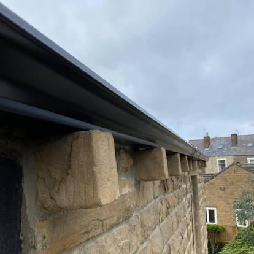

Seamless Guttering
Continuous aluminium guttering roll-formed on site to suit the exact dimensions of your property.
View service →Gutterworx · West Yorkshire
Made-to-measure aluminium guttering, fascias and soffits for properties in Harrogate, North Yorkshire, with trade cut and drop also available.
Local roofline service
Harrogate's varied housing stock calls for careful detailing. We focus on accurate measurement, considered outlet positions and a finish that complements the property as well as moving rainwater effectively.
Gutterworx forms seamless guttering on site to the measured length of each run. Reducing repeated straight-line joints creates a cleaner appearance and removes many of the common weak points found in short sectional systems.
We also cover Knaresborough, Ripley, Pannal and surrounding HG postcodes. Send your postcode if you are unsure whether the property is within range.

Available services
Continuous aluminium guttering roll-formed on site to suit the exact dimensions of your property.
View service →Neat, low-maintenance uPVC roofline systems fitted to protect exposed timber and improve kerb appeal.
View service →Practical repairs for slipped tiles, damaged pointing, leaks, storm damage and other roofing faults.
View service →5-inch and 6-inch Ogee seamless gutter supplied to roofers, joiners and other trade customers.
View service →Common questions
Yes. Submit the property details and preferred service, and we will arrange the appropriate next step for a no-obligation quotation.
Yes. Choose Cut & Drop on the form and provide the 5-inch or 6-inch Ogee profile, lengths, corners, outlets, colour, address and preferred date.
Yes. We can assess and quote for the complete roofline, including fascias, soffits, gutters, outlets and downpipes.